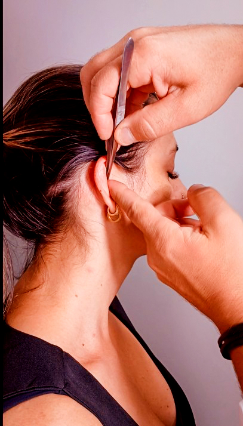
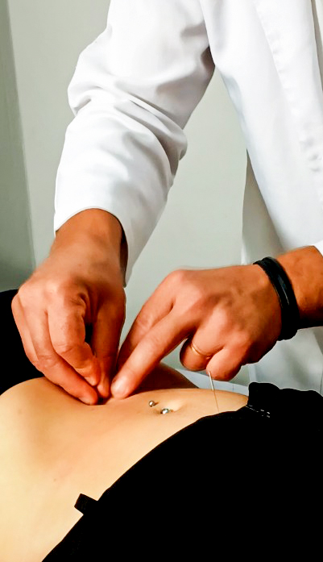
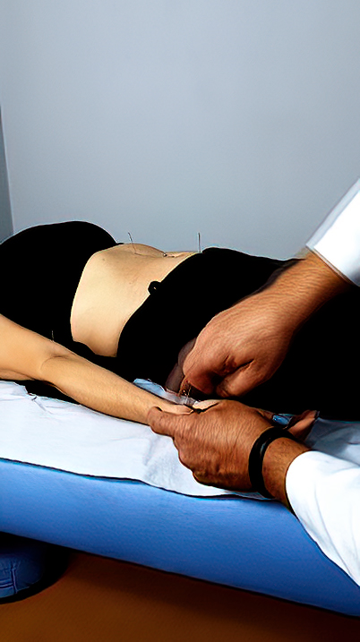
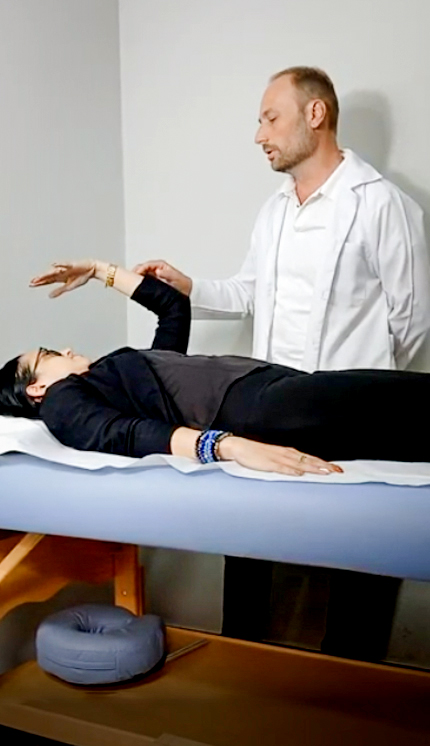

Galeria
Meu Trabalho
Conheça um pouco dos atendimentos, técnicas e cuidados realizados em acupuntura, auriculoterapia e terapias integrativas.



Momentos dos Atendimentos
Quer saber se a acupuntura pode ajudar no seu caso?
Agende uma avaliação e receba uma orientação personalizada.
Chamar no WhatsAppDescubra Mais . . .